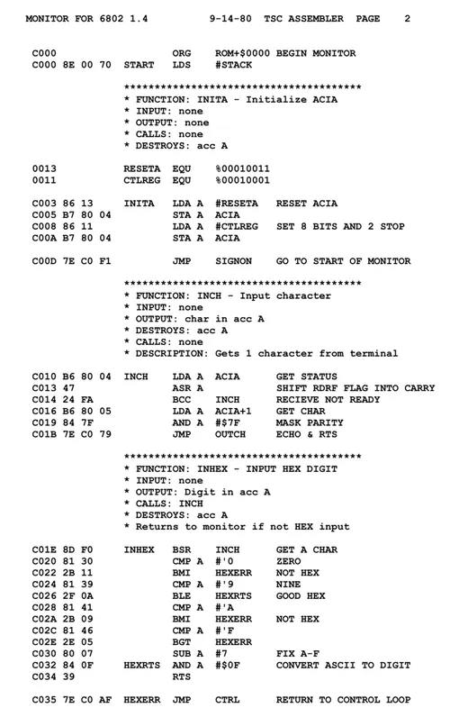

Assembly Beginner
x86_64 Architecture — low-overhead hardware manipulation, memory registers, stack layout orientation, and bare-metal execution control.
Table of Contents
Program Structure & Segments
An Assembly program (NASM syntax) maps directly into system memory blocks. Executable binaries separate binary parameters into structural subdivisions called **Segments** or **Sections**.
section .data ; Allocation block for initialized static variables msg db "Core online", 10 section .bss ; Allocation block for uninitialized runtime buffers buffer resb 64 section .text global _start _start: ; Execution entry point (Required by the kernel linker)
x86_64 Processor Registers
Registers are high-speed storage locations built directly inside the CPU core. Modern x86_64 chips host 64-bit general-purpose cells that remain backward-compatible with 32-bit, 16-bit, and 8-bit historical subdivisions.
Data Movement Operations
The mov instruction transfers data payloads between registers, or between registers and system RAM cells. Note that Intel syntax maps arguments as mov destination, source.
mov rax, 100 ; Load an immediate numeric constant into RAX mov rbx, rax ; Copy raw bit contents directly from RAX into RBX mov rcx, [msg] ; Square brackets dereference addresses: reads memory contents lea rsi, [msg] ; Load Effective Address: copies the structural pointer tracking link
Basic Arithmetic Instructions
Perform native mathematical mutations using dedicated CPU logic block circuits. These operations alter register allocations in place.
add rax, 50 ; RAX = RAX + 50 sub rbx, rcx ; RBX = RBX - RCX inc rdx ; Increment RDX value by 1 (Fast loop step) dec rsi ; Decrement RSI value by 1 xor rax, rax ; Bitwise Exclusive OR: efficiently clears register state to 0
Status Flags & Conditional Jumps
Branching logic evaluates data by comparing operands using the cmp instruction. This operation subtracts values without saving the result, modifying internal CPU **Status Flags** instead.
mov rax, 42 cmp rax, 50 ; Compare current RAX state against literal scalar threshold jl .less_target ; Jump to local label if RAX is Less than 50 jmp .always_target ; Unconditional jump: instantly re-routes instruction pipeline .less_target: inc rbx .always_target:
The Stack Pointer (Push & Pop)
The **Stack** is a Last-In, First-Out (LIFO) memory region managed directly by the CPU. The rsp register tracks the top of the stack, growing downward toward lower memory addresses.
push rax ; Decrements RSP by 8 bytes and copies RAX onto the Stack grid push rbx ; Preserves RBX state before calling destructive subroutines pop rbx ; Restores value from the stack, saving it back into RBX pop rax ; Restores RAX state, incrementing RSP by 8 bytes automatically
push instruction must map to an associated pop before exiting a function context. Imbalances cause subroutines to read corrupt addresses, resulting in instant Segmentation Fault crashes.
Functions & Subroutines
Subroutines organize code blocks into reusable tasks. The call command pushes the current return address onto the stack and jumps to the target label. The ret statement pops that address to resume execution.
_start:
mov rax, 5
call double_value ; Divert instruction track into subroutine block context
; RAX holds 10 here
double_value:
add rax, rax ; Double register accumulator content parameters
ret ; Pops the saved IP address off the stack, jumping back
Linux System Calls (Syscalls)
Assembly can transition from user space to kernel space via the syscall instruction. This triggers an exception that passes execution control directly to the OS kernel to handle tasks like writing files or printing text to the console.
; Triggering a graceful sys_exit sequence via the Linux kernel mov rax, 60 ; Syscall number 60 corresponds to sys_exit on x86_64 Linux mov rdi, 0 ; Load standard error code 0 (Success exit parameter flag) syscall ; Kernel executes system interruption process routine